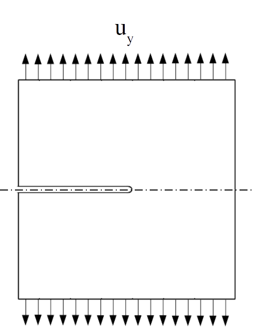

List of tutorials
All tutorials are written assuming that you are reasonably familiar with MOOSE. If you find most of the tutorials difficult to follow, please refer to the official MOOSE website for learning resources.
Tutorial 1: Small deformation elasticity
This tutorial covers the basic usage of RACCOON.
Consider a two-dimensional square plate with a notch (the commonly used geometry for Mode-I fracture) under stretch, we would like to solve for the displacements and visualize its strains and stresses everywhere.

Figure 1: Geometry and boundary conditions of the Mode-I crack propagation problem.
Global expressions and parameters
It is always good practice to define parameters using expressions at the top of the input file. Here, we first define two expressions for Young's modulus and Poisson's ratio:
E = 2.1e5
nu = 0.3
Next, we convert and to bulk modulus and shear modulus using brace expressions:
K = '${fparse E/3/(1-2*nu)}'
G = '${fparse E/2/(1+nu)}'
For our convenience, let's also define the global parameter displacements as that is required by several objects, e.g. ADStressDivergenceTensors, ADComputeSmallStrain, etc.. GlobalParams definitions will be applied wherever applicable throughout the input file, unless locally overridden.
[GlobalParams]
displacements = 'disp_x disp_y'
[]
Mesh
Let's utilize symmetry about the x-axis so that we can get away with only modeling the top half of the domain:
[Mesh]
[gen]
type = GeneratedMeshGenerator
dim = 2
nx = 30
ny = 15
ymax = 0.5
[]
[noncrack]
type = BoundingBoxNodeSetGenerator
input = gen
new_boundary = noncrack
bottom_left = '0.5 0 0'
top_right = '1 0 0'
[]
construct_side_list_from_node_list = true
[]
Notice that we defined an extra nodeset/sideset called "noncrack", so that we can later apply the symmetry condition.
Variables and AuxVariables
In this problem we solve for displacements in the x- and y- directions, hence we define
[Variables]
[disp_x]
[]
[disp_y]
[]
[]
In addition, we define auxiliary variables fy and d:
[AuxVariables]
[fy]
[]
[d]
[]
[]
The AuxVariable fy will store residuals associated with Variable disp_y. Later, we will use it to compute the reaction force.
The AuxVariable d is a dummy variable representing the phase-field that is zero everywhere. In this tutorial, it will stay zero.
Kernels
Kernels are arguably the most important objects in an input file. They define the equations we are solving for. In this case, we solve for
without any body force.
Kernels are defined as
[Kernels]
[solid_x]
type = ADStressDivergenceTensors
variable = disp_x
component = 0
[]
[solid_y]
type = ADStressDivergenceTensors
variable = disp_y
component = 1
save_in = fy
[]
[]
We are solving a vector-valued equation, and the two kernels correspond to the two components, respectively.
Boundary conditions
Boundary conditions are shown in Figure 1: only the top half of the domain is modeled utilizing symmetry. On the bottom of the computational domain, i.e. a nodeset named "noncrack" is generated and used to define the symmetry condition. A displacement-controlled Dirichlet boundary condition is applied on the top. In the input file, these boundary conditions correspond to
[BCs]
[ydisp]
type = FunctionDirichletBC
variable = disp_y
boundary = top
function = 't'
[]
[yfix]
type = DirichletBC
variable = disp_y
boundary = noncrack
value = 0
[]
[xfix]
type = DirichletBC
variable = disp_x
boundary = top
value = 0
[]
[]
The y-displacement on the top boundary is set to be equal to the time t. In this quasi-static setting, we can use time as a convenient dummy load-control parameter.
Material models
The material is assumed to be isotropic elastic under small strain assumptions. First, the homogeneous shear and bulk modulus are defined everywhere (at every quadrature point):
[Materials]
[bulk]
type = ADGenericConstantMaterial
prop_names = 'K G'
prop_values = '${K} ${G}'
[]
[]
Since we don't consider any fracture coupling, a dummy NoDegradation degradation function is defined as
[Materials]
[no_degradation]
type = NoDegradation
property_name = g
expression = 1
phase_field = d
[]
[]
Then, the Materials section is completed by the definition of the strain calculator, the constitutive relation, and the stress calculator:
[Materials]
[bulk]
type = ADGenericConstantMaterial
prop_names = 'K G'
prop_values = '${K} ${G}'
[]
[no_degradation]
type = NoDegradation
property_name = g
expression = 1
phase_field = d
[]
[strain]
type = ADComputeSmallStrain
[]
[elasticity]
type = SmallDeformationIsotropicElasticity
bulk_modulus = K
shear_modulus = G
phase_field = d
degradation_function = g
output_properties = 'elastic_strain'
outputs = exodus
[]
[stress]
type = ComputeSmallDeformationStress
elasticity_model = elasticity
output_properties = 'stress'
outputs = exodus
[]
[]
Notice that we have requested to output elastic_strain and stress to exodus. Since they are RankTwoTensors, we will find elemental variables with names like elastic_strain_00 and stress_22, denoting their corresponding component.
It is imperative to understand that, in MOOSE, MaterialProperties are computed on-thy-fly. Material dependency is automatically resolved by MOOSE.
Postprocessors
Finally, we add a postprocessor to sum the nodal values of fy along the top boundary to give us the reaction force in the y-direction:
[Postprocessors]
[Fy]
type = NodalSum
variable = fy
boundary = top
[]
[]